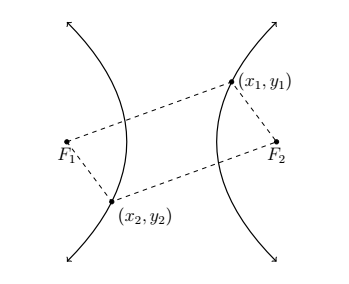
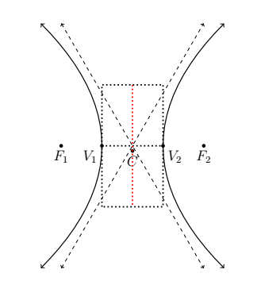
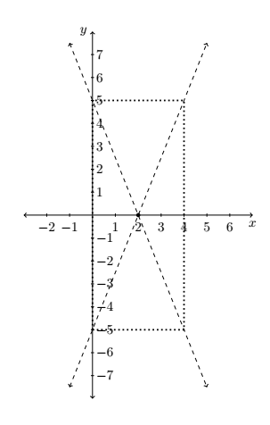
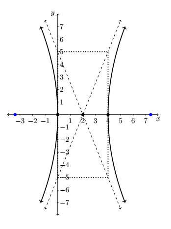
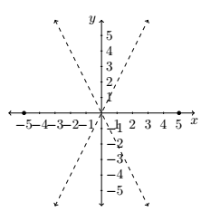
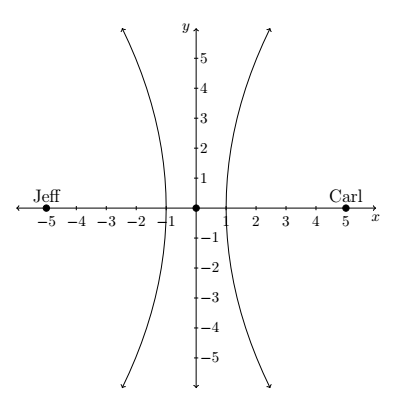
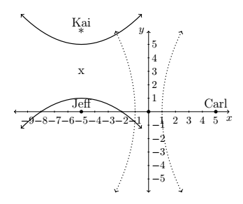
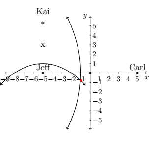

CH 7.4 – Hyperbolas
In the definition of an ellipse, we fixed two points called foci and looked at points whose distances to the foci always added to a constant distance \(d\). Those prone to syntactical tinkering may wonder what, if any, curve we'd generate if we replaced added with subtracted. The answer is a hyperbola.
Definition of a Hyperbola
Given two distinct points \(F_1\) and \(F_2\) in the plane and a fixed distance \(d\), a hyperbola is the set of all points \((x, y)\) in the plane such that the absolute value of the difference of each of the distances from \(F_1\) and \(F_2\) to \((x, y)\) is \(d\). The points \(F_1\) and \(F_2\) are called the foci of the hyperbola.

In the figure above:
\[ \text{the distance from } F_1 \text{ to } (x_1, y_1) - \text{the distance from } F_2 \text{ to } (x_1, y_1) = d \]and
\[ \text{the distance from } F_2 \text{ to } (x_2, y_2) - \text{the distance from } F_1 \text{ to } (x_2, y_2) = d \]Note that the hyperbola has two parts, called branches. The center of the hyperbola is the midpoint of the line segment connecting the two foci. The transverse axis of the hyperbola is the line segment connecting two opposite ends of the hyperbola which also contains the center and foci. The vertices of a hyperbola are the points of the hyperbola which lie on the transverse axis. In addition, we will show momentarily that there are lines called asymptotes which the branches of the hyperbola approach for large \(x\) and \(y\) values. They serve as guides to the graph. In pictures,

Before we derive the standard equation of the hyperbola, we need to discuss one further parameter, the conjugate axis of the hyperbola. The conjugate axis of a hyperbola is the line segment through the center which is perpendicular to the transverse axis and has the same length as the line segment through a vertex which connects the asymptotes. In pictures we have, where the red dotted line is the conjugate axis

Note that in the diagram, we can construct a rectangle using line segments with lengths equal to the lengths of the transverse and conjugate axes whose center is the center of the hyperbola and whose diagonals are contained in the asymptotes. This guide rectangle, much akin to the one we saw in Section 7.3 to help us graph ellipses, will aid us in graphing hyperbolas.
Suppose we wish to derive the equation of a hyperbola. For simplicity, we shall assume that the center is \((0,0)\), the vertices are \((a,0)\) and \((-a,0)\) and the foci are \((c,0)\) and \((-c,0)\). We label the endpoints of the conjugate axis \((0,b)\) and \((0,-b)\). (Although \(b\) does not enter into our derivation, we will have to justify this choice as you shall see later.) As before, we assume \(a\), \(b\), and \(c\) are all positive numbers.
Since \((a,0)\) is on the hyperbola, it must satisfy the conditions as outlined by the definition of a hyperbola. That is, the distance from \((-c,0)\) to \((a,0)\) minus the distance from \((c,0)\) to \((a,0)\) must equal the fixed distance \(d\). Since all these points lie on the \(x\)-axis, we get
\[ \begin{array}{rclr} \text{distance from } (-c,0) \text{ to } (a,0) - \text{distance from } (c,0) \text{ to } (a,0) &=& d & \\[6pt] (a+c) - (c-a) &=& d & \\[6pt] 2a &=& d & \end{array} \]In other words, the fixed distance \(d\) from the definition of the hyperbola is actually the length of the transverse axis! (Where have we seen that type of coincidence before?) Now consider a point \((x,y)\) on the hyperbola. Using the definition of a hyperbola we get
\[ \begin{array}{rclr} \text{distance from } (-c,0) \text{ to } (x,y) - \text{distance from } (c,0) \text{ to } (x,y) &=& 2a & \\[6pt] \sqrt{(x-(-c))^2+(y-0)^2} - \sqrt{(x-c)^2+(y-0)^2} &=& 2a & \\[6pt] \sqrt{(x+c)^2+y^2} - \sqrt{(x-c)^2+y^2} &=& 2a & \end{array} \]Using the same arsenal of Intermediate Algebra weaponry we used in deriving the standard formula of an ellipse, we arrive at the following.
\[ \left(a^2 - c^2\right)x^2 + a^2 y^2 = a^2\left(a^2 - c^2\right) \]What remains is to determine the relationship between \(a\), \(b\) and \(c\). To that end, we note that since \(a\) and \(c\) are both positive numbers with \(a < c\), we get \(a^2 < c^2\) so that \(a^2 - c^2\) is a negative number. Hence, \(c^2 - a^2\) is a positive number. For reasons which will become clear soon, we re-write the equation by solving for \(y^2/x^2\) to get
\[ \begin{array}{rclr} \left(a^2 - c^2\right)x^2 + a^2 y^2 &=& a^2\left(a^2 - c^2\right) & \\[6pt] -\left(c^2 - a^2\right)x^2 + a^2 y^2 &=& -a^2\left(c^2 - a^2\right) & \\[6pt] a^2 y^2 &=& \left(c^2 - a^2\right)x^2 - a^2\left(c^2 - a^2\right) & \\[6pt] \dfrac{y^2}{x^2} &=& \dfrac{\left(c^2 - a^2\right)}{a^2} - \dfrac{\left(c^2 - a^2\right)}{x^2} & \end{array} \]As \(x\) and \(y\) attain very large values, the quantity \(\dfrac{(c^2-a^2)}{x^2} \rightarrow 0\) so that \(\dfrac{y^2}{x^2} \rightarrow \dfrac{(c^2-a^2)}{a^2}\). By setting \(b^2 = c^2 - a^2\) we get \(\dfrac{y^2}{x^2} \rightarrow \dfrac{b^2}{a^2}\). This shows that \(y \rightarrow \pm\dfrac{b}{a}x\) as \(|x|\) grows large. Thus \(y = \pm\dfrac{b}{a}x\) are the asymptotes to the graph as predicted and our choice of labels for the endpoints of the conjugate axis is justified. In our equation of the hyperbola we can substitute \(a^2 - c^2 = -b^2\) which yields
\[ \begin{array}{rclr} \left(a^2 - c^2\right)x^2 + a^2 y^2 &=& a^2\left(a^2 - c^2\right) & \\[6pt] -b^2 x^2 + a^2 y^2 &=& -a^2 b^2 & \\[6pt] \dfrac{x^2}{a^2} - \dfrac{y^2}{b^2} &=& 1 & \end{array} \]The equation above is for a hyperbola whose center is the origin and which opens to the left and right. If the hyperbola were centered at a point \((h,k)\), we would get the following.
Standard Equation of a Hyperbola
For positive numbers \(a\) and \(b\), the equation of a hyperbola with center \((h,k)\) is:
Horizontal Transverse Axis
\(\dfrac{(x-h)^2}{a^2} - \dfrac{(y-k)^2}{b^2} = 1\)
Vertices: \((h \pm a,\ k)\)
Foci: \((h \pm c,\ k)\)
Where \(c^2 = a^2 + b^2\)
Vertical Transverse Axis
\(\dfrac{(y-k)^2}{b^2} - \dfrac{(x-h)^2}{a^2} = 1\)
Vertices: \((h,\ k \pm a)\)
Foci: \((h,\ k \pm c)\)
Where \(c^2 = a^2 + b^2\)
The values of \(a\) and \(b\) determine how far in the \(x\) and \(y\) directions, respectively, one counts from the center to determine the rectangle through which the asymptotes pass. In both cases, the distance from the center to the foci, \(c\), as seen in the derivation, can be found by the formula \(c = \sqrt{a^2 + b^2}\). Lastly, note that we can quickly distinguish the equation of a hyperbola from that of a circle or ellipse because the hyperbola formula involves a difference of squares where the circle and ellipse formulas both involve the sum of squares.
Example
- Graph the equation \(\dfrac{(x-2)^2}{4} - \dfrac{y^2}{25} = 1\). Find the center, the lines which contain the transverse and conjugate axes, the vertices, the foci, and the equations of the asymptotes.
- Find the equation of the hyperbola with asymptotes \(y = \pm 2x\) and vertices \((\pm 5, 0)\).
Solution
1. We first see that this equation is given to us in the standard form. Here \(x - h\) is \(x - 2\) so \(h = 2\), and \(y - k\) is \(y\) so \(k = 0\). Hence, our hyperbola is centered at \((2, 0)\). We see that \(a^2 = 4\) so \(a = 2\), and \(b^2 = 25\) so \(b = 5\). This means we move \(2\) units to the left and right of the center and \(5\) units up and down from the center to arrive at points on the guide rectangle. The asymptotes pass through the center of the hyperbola as well as the corners of the rectangle. This yields the following set up.

Since the \(y^2\) term is being subtracted from the \(x^2\) term, we know that the branches of the hyperbola open to the left and right. This means that the transverse axis lies along the \(x\)-axis. Hence, the conjugate axis lies along the vertical line \(x = 2\). Since the vertices of the hyperbola are where the hyperbola intersects the transverse axis, we get that the vertices are \(2\) units to the left and right of \((2,0)\) at \((0,0)\) and \((4,0)\). To find the foci, we need \(c = \sqrt{a^2 + b^2} = \sqrt{4 + 25} = \sqrt{29}\). Since the foci lie on the transverse axis, we move \(\sqrt{29}\) units to the left and right of \((2,0)\) to arrive at \((2 - \sqrt{29},\ 0)\) (approximately \((-3.39,\ 0)\)) and \((2 + \sqrt{29},\ 0)\) (approximately \((7.39,\ 0)\)). To determine the equations of the asymptotes, recall that the asymptotes go through the center of the hyperbola, \((2,0)\), as well as the corners of the guide rectangle, so they have slopes of \(\pm\dfrac{b}{a} = \pm\dfrac{5}{2}\). Using the point-slope equation of a line, yields \(y - 0 = \pm\dfrac{5}{2}(x-2)\), so we get \(y = \dfrac{5}{2}x - 5\) and \(y = -\dfrac{5}{2}x + 5\). Putting it all together, we get

2. Plotting the data given to us, we have

This graph not only tells us that the branches of the hyperbola open to the left and to the right, it also tells us that the center is \((0,0)\). Hence, our standard form is \(\dfrac{x^2}{a^2} - \dfrac{y^2}{b^2} = 1\). Since the vertices are \((\pm 5,\ 0)\), we have \(a = 5\) so \(a^2 = 25\). In order to determine \(b^2\), we recall that the slopes of the asymptotes are \(\pm\dfrac{b}{a}\). Since \(a = 5\) and the slope of the line \(y = 2x\) is \(2\), we have that \(\dfrac{b}{5} = 2\), so \(b = 10\). Hence, \(b^2 = 100\) and our final answer is
\[ \frac{x^2}{25} - \frac{y^2}{100} = 1 \]As with the other conic sections, an equation whose graph is a hyperbola may not be given in either of the standard forms. To rectify that, we have the following.
To Write the Equation of a Hyperbola in Standard Form
- Group the same variables together on one side of the equation and position the constant on the other side.
- Complete the square in both variables as needed.
- Divide both sides by the constant term so that the constant on the other side of the equation becomes \(1\).
Example
- Consider the equation \(9y^2 - x^2 - 6x = 10\). Put this equation into standard form and graph. Find the center, the lines which contain the transverse and conjugate axes, the vertices, the foci, and the equations of the asymptotes.
- Jeff is stationed \(10\) miles due west of Carl in an otherwise empty forest in an attempt to locate an elusive Sasquatch. At the stroke of midnight, Jeff records a Sasquatch call \(9\) seconds earlier than Carl. If the speed of sound that night is \(760\) miles per hour, determine a hyperbolic path along which Sasquatch must be located.
- By a stroke of luck, Kai was also camping in the woods during the events of the previous example. He was located \(6\) miles due north of Jeff and heard the Sasquatch call \(18\) seconds after Jeff did. Use this added information to locate Sasquatch.
Solution
1. We need only complete the square on \(x\):
\[ \begin{array}{rclr} 9y^2 - x^2 - 6x &=& 10 & \\[5pt] 9y^2 - 1\left(x^2 + 6x\right) &=& 10 & \\[5pt] 9y^2 - \left(x^2 + 6x + 9\right) &=& 10 - 1(9) & \\[5pt] 9y^2 - (x+3)^2 &=& 1 & \\[5pt] \dfrac{y^2}{\frac{1}{9}} - \dfrac{(x+3)^2}{1} &=& 1 & \end{array} \]Now that this equation is in standard form, we see that \(x - h\) is \(x + 3\) so \(h = -3\), and \(y - k\) is \(y\) so \(k = 0\). Hence, our hyperbola is centered at \((-3,\ 0)\). We find that \(a^2 = 1\) so \(a = 1\), and \(b^2 = \dfrac{1}{9}\) so \(b = \dfrac{1}{3}\). This means that we move \(1\) unit to the left and right of the center and \(\dfrac{1}{3}\) units up and down from the center to arrive at points on the guide rectangle. Since the \(x^2\) term is being subtracted from the \(y^2\) term, we know the branches of the hyperbola open upwards and downwards. This means the transverse axis lies along the vertical line \(x = -3\) and the conjugate axis lies along the \(x\)-axis. Since the vertices of the hyperbola are where the hyperbola intersects the transverse axis, we get that the vertices are \(\dfrac{1}{3}\) of a unit above and below \((-3,\ 0)\) at \(\left(-3,\ \dfrac{1}{3}\right)\) and \(\left(-3,\ -\dfrac{1}{3}\right)\). To find the foci, we use
\[ c = \sqrt{a^2 + b^2} = \sqrt{\frac{1}{9} + 1} = \frac{\sqrt{10}}{3} \]Since the foci lie on the transverse axis, we move \(\dfrac{\sqrt{10}}{3}\) units above and below \((-3,\ 0)\) to arrive at \(\left(-3,\ \dfrac{\sqrt{10}}{3}\right)\) and \(\left(-3,\ -\dfrac{\sqrt{10}}{3}\right)\). To determine the asymptotes, recall that the asymptotes go through the center of the hyperbola, \((-3,0)\), as well as the corners of the guide rectangle, so they have slopes of \(\pm\dfrac{b}{a} = \pm\dfrac{1}{3}\). Using the point-slope equation of a line, we get \(y = \dfrac{1}{3}x + 1\) and \(y = -\dfrac{1}{3}x - 1\). Putting it all together, we get

2. Since Jeff hears Sasquatch sooner, it is closer to Jeff than it is to Carl. Since the speed of sound is \(760\) miles per hour, we can determine how much closer Sasquatch is to Jeff by multiplying
\[ 760\,\frac{\text{miles}}{\text{hour}} \times \frac{1\,\text{hour}}{3600\,\text{seconds}} \times 9\,\text{seconds} = 1.9\,\text{miles} \]This means that Sasquatch is \(1.9\) miles closer to Jeff than it is to Carl. In other words, Sasquatch must lie on a path where
\[ \text{(the distance to Carl)} - \text{(the distance to Jeff)} = 1.9 \]This is exactly the situation in the definition of a hyperbola. In this case, Jeff and Carl are located at the foci, and our fixed distance \(d\) is \(1.9\). For simplicity, we assume the hyperbola is centered at \((0,0)\) with its foci at \((-5,\ 0)\) and \((5,\ 0)\). Schematically, we have

We are seeking a curve of the form \(\dfrac{x^2}{a^2} - \dfrac{y^2}{b^2} = 1\) in which the distance from the center to each focus is \(c = 5\). As we saw in the derivation of the standard equation of the hyperbola, \(d = 2a\), so that \(2a = 1.9\), or \(a = 0.95\) and \(a^2 = 0.9025\). All that remains is to find \(b^2\). To that end, we recall that \(a^2 + b^2 = c^2\) so \(b^2 = c^2 - a^2 = 25 - 0.9025 = 24.0975\). Since Sasquatch is closer to Jeff than it is to Carl, it must be on the western (left hand) branch of
\[ \frac{x^2}{0.9025} - \frac{y^2}{24.0975} = 1 \]3. Kai and Jeff are now the foci of a second hyperbola where the fixed distance \(d\) can be determined as before
\[ 760\,\frac{\text{miles}}{\text{hour}} \times \frac{1\,\text{hour}}{3600\,\text{seconds}} \times 18\,\text{seconds} = 3.8\,\text{miles} \]Since Jeff was positioned at \((-5,\ 0)\), we place Kai at \((-5,\ 6)\). This puts the center of the new hyperbola at \((-5,\ 3)\). Plotting Kai's position and the new center gives us the diagram below on the left. The second hyperbola is vertical, so it must be of the form \(\dfrac{(y-3)^2}{b^2} - \dfrac{(x+5)^2}{a^2} = 1\). As before, the distance \(d\) is the length of the major axis, which in this case is \(2b\). We get \(2b = 3.8\) so that \(b = 1.9\) and \(b^2 = 3.61\). With Kai \(6\) miles due north of Jeff, we have that the distance from the center to the focus is \(c = 3\). Since \(a^2 + b^2 = c^2\), we get \(a^2 = c^2 - b^2 = 9 - 3.61 = 5.39\). Kai heard the Sasquatch call after Jeff, so Kai is farther from Sasquatch than Jeff. Thus Sasquatch must lie on the southern branch of the hyperbola
\[ \frac{(y-3)^2}{3.61} - \frac{(x+5)^2}{5.39} = 1 \]Looking at the western branch of the hyperbola determined by Jeff and Carl along with the southern branch of the hyperbola determined by Kai and Jeff, we see that there is exactly one point in common, and this is where Sasquatch must have been when it called.


To determine the coordinates of this point of intersection exactly, we would need techniques for solving systems of non-linear equations. Doing so, we get Sasquatch is approximately at \((-0.9629,\ -0.8113)\).
Each of the conic sections we have studied in this chapter result from graphing equations of the form \(Ax^2 + Cy^2 + Dx + Ey + F = 0\) for different choices of \(A\), \(C\), \(D\), \(E\), and \(F\). While we've seen examples demonstrate how to convert an equation from this general form to one of the standard forms, we close this chapter with some advice about which standard form to choose.
Strategies for Identifying Conic Sections
Suppose the graph of the equation \(Ax^2 + Cy^2 + Dx + Ey + F = 0\) is a non-degenerate conic section.
- If just one variable is squared, the graph is a parabola. Put the equation in the standard form for a parabola.
If both variables are squared, look at the coefficients of \(x^2\) and \(y^2\), \(A\) and \(C\).
- If \(A = C\), the graph is a circle. Put the equation in standard form.
- If \(A \neq C\) but \(A\) and \(C\) have the same sign, the graph is an ellipse. Put the equation in standard form.
- If \(A\) and \(C\) have different signs, the graph is a hyperbola. Put the equation in standard form.
Exercises
Exercises to be added at a later date.